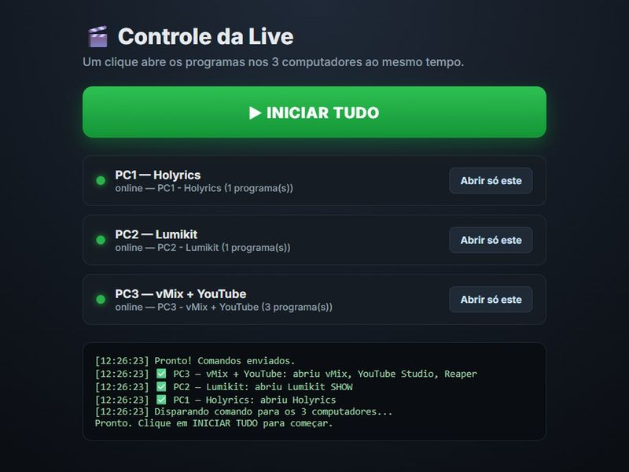
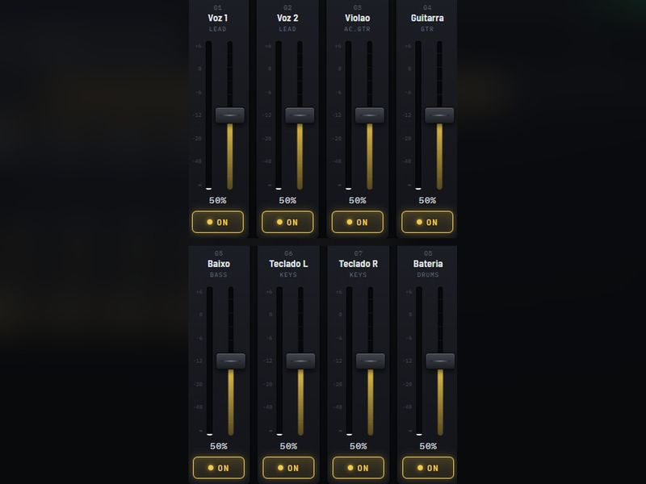
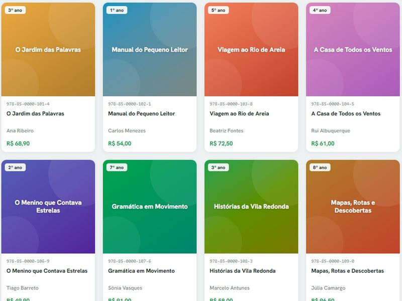

Libras e audiodescrição
Conteúdo infantil da ELO que passa a alcançar quem não enxerga e quem não ouve, num volume que gravação humana não daria conta.
Marcos Paulo T. G. dos SantosBrasil
Especialista audiovisual e de acessibilidade na ELO Editora, em transição para desenvolvimento web. Transito entre operar uma mesa de som ao vivo e escrever código — as duas coisas com o mesmo cuidado técnico.
01Sobre mim
Comecei na área de Administração — onde desenvolvi base em organização, processos e gestão — e encontrei no audiovisual e na tecnologia o lugar onde quero atuar. Trabalho com sonorização, edição de vídeo, transmissão ao vivo e acessibilidade, especialmente em eventos, projetos para a igreja e produções colaborativas, incluindo audiodescrição e conteúdo assistido por IA.
Hoje curso Análise e Desenvolvimento de Sistemas e estou migrando para desenvolvimento web, levando comigo o mesmo cuidado técnico e a mesma exigência de qualidade que tinha operando áudio e vídeo ao vivo.
02Trajetória
Contrato assinado após um mês de teste na área — mantendo a atuação em audiovisual e acessibilidade.
Análise e Desenvolvimento de Sistemas, no Centro Universitário Internacional UNINTER — enquanto atuo na ELO Editora.
Produção e edição de vídeo, operação ao vivo em eventos, Libras, audiodescrição com IA e sonorização de livros.
Sistemas de som em igrejas e podcasts. No mesmo ano, entrada no DaVinci Resolve e edição de vídeo.
Base em organização, processos e gestão — de onde parti para o audiovisual e a tecnologia.
03Inventário
O que eu uso no dia a dia, das duas frentes.
Produção audiovisual
Tecnologia
04Automação
Antes de cada culto, três computadores precisavam ser ligados e configurados à mão. Virou um clique: Holyrics, Lumikit e vMix sobem juntos pela rede local. Nasceu da minha própria rotina de transmissão.


05Web app
Numa banda, todo mundo quer ouvir algo diferente no retorno — e só uma pessoa alcança a mesa. Aqui cada músico ajusta o próprio fone pelo celular, falando direto com a Soundcraft Ui24R, sem abrir a mesa inteira.
06Sistema
Sistema interno com mais de 30 áreas, integrado a ERP, meios de pagamento e ferramentas de projeto. Trabalho nele em equipe, com Dalila Rodrigues e Vander Loto.

07Audiovisual & acessibilidade
Sonorização, edição, transmissão ao vivo e acessibilidade — na ELO Editora e em projetos próprios. Três frentes se repetem no meu dia.
Conteúdo infantil da ELO que passa a alcançar quem não enxerga e quem não ouve, num volume que gravação humana não daria conta.
Livro que vira experiência sonora: vozes, ambiência e design de som costurados para a história acontecer no ouvido.
Operação ao vivo multi-câmera: corte, áudio e streaming acontecendo junto, sem segunda tentativa.
Peças autorais — AVIVA, REINO, Pelo Rei — da direção ao corte final e à trilha.
“Entre o Propósito”: narrativa histórica construída com apoio de IA na imagem e na voz.
Aberturas de evento, vídeos de chamada, conferências, documentário e registro fotográfico.
08IA aplicada
Uso inteligência artificial onde ela resolve trabalho real — no audiovisual e no desenvolvimento. A saída da máquina é começo, não entrega: equalização, ritmo e respiração ainda passam por mim.
Descrevo o que acontece na tela e gero narração com voz sintética — conteúdo infantil que passa a alcançar quem não enxerga.
Voz por IA para vídeos, livros e projetos digitais, sempre finalizada no Reaper.
Revisão de roteiro e apoio no tratamento de imagem — acelera a parte repetitiva e me deixa tempo para o que exige decisão.
09Contato
Estou aberto a boas conversas — projeto, vaga ou troca de ideia sobre áudio, acessibilidade e código.